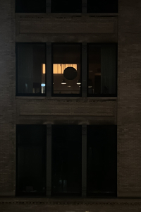

A collection of images and videos taken between 18:00 and 06:00 in New York city, looking into different spaces through different frames.

About
"Looking In" is a collection of images and videos taken between 18:00 and 06:00 in New York city. Each image looks into a space through a frame, whether it be windows, doors, holes, etc.
The collection as a whole challenges the concept of privacy, and explores ideas of invasion and intrusion. Though the identities of the people who own, occupy or use each space remain anonymous, questions on the morals or ethics of looking into a space from the positions of an outsider arise.
Where does the boundary of privacy invasion lie? What factors play a part in creating this boundary?